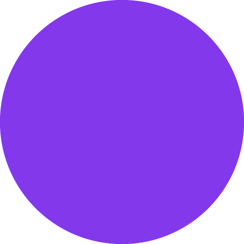
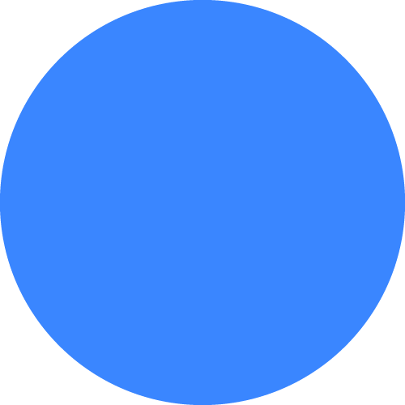

Pós modern ismo
Nossa gente
Pós job
torrada ou café
a tropicália na música e história da nossa persona, nosso Brasil.
torrada ou café
a tropicália na música e história da nossa persona, nosso Brasil.